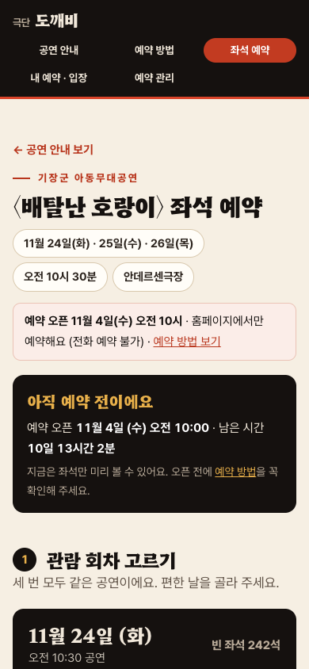
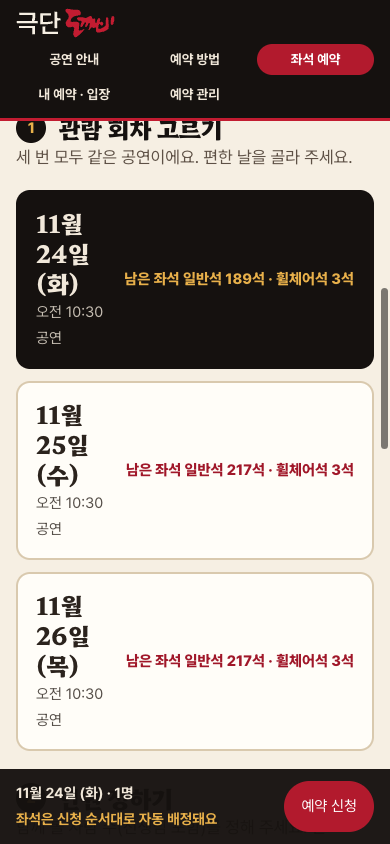
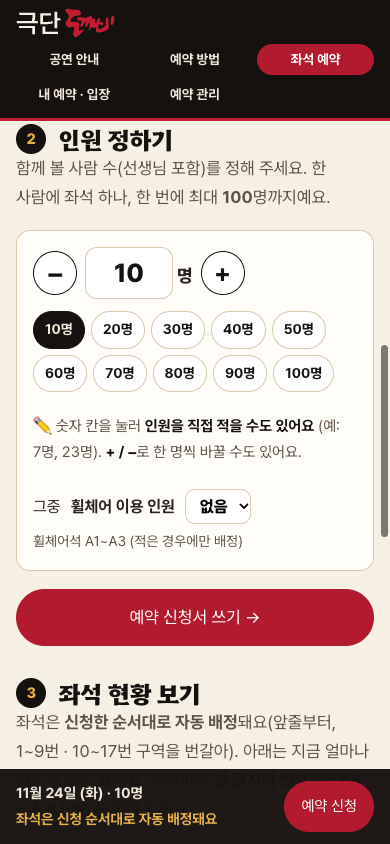
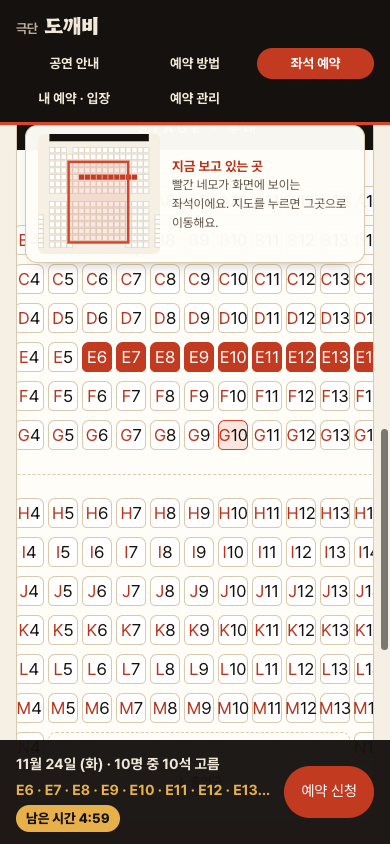
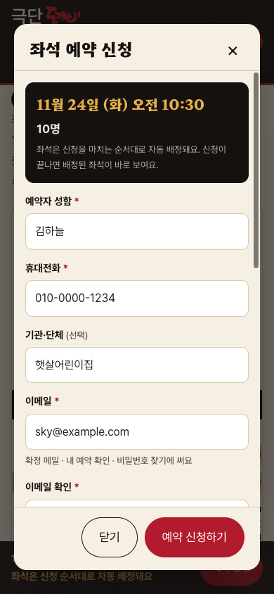
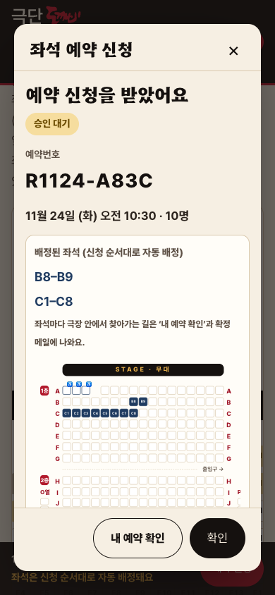
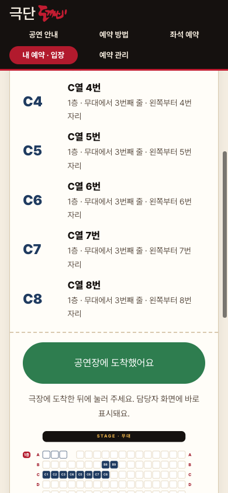

0
예약은 11월 4일(수) 오전 10시에 열려요
그 전에는 좌석표를 미리 볼 수만 있고, 화면 위에 예약 오픈까지 남은 시간이 나와요. 시간이 되면 화면이 저절로 바뀌어요.
오픈 시각에 맞춰 이 페이지를 열어 두세요. 좌석은 먼저 신청한 분 순서로 잡혀요.
휴대폰으로 3분이면 끝나요. 예약이 열리기 전에 한 번 읽어 두시면 좋아요.

그 전에는 좌석표를 미리 볼 수만 있고, 화면 위에 예약 오픈까지 남은 시간이 나와요. 시간이 되면 화면이 저절로 바뀌어요.
오픈 시각에 맞춰 이 페이지를 열어 두세요. 좌석은 먼저 신청한 분 순서로 잡혀요.

맨 위 메뉴의 ‘좌석 예약’을 누르고, 11월 24일(화) · 25일(수) · 26일(목) 중 하루를 골라요. 세 번 모두 같은 공연이고 오전 10시 30분에 시작해요.
회차마다 남은 좌석 수가 보여요.

+ / − 단추나 1명 · 2명 · 5명 · 10명 · 20명 · 50명 · 100명 단추로 함께 볼 사람 수를 정해요. 칸을 눌러 숫자를 직접 적어도 돼요. 단체는 선생님도 포함해서 세어 주세요.
한 사람에 좌석 하나, 한 번에 최대 100명까지예요. 어린이집·유치원 단체도 이렇게 한 번에 신청해요.

앉고 싶은 자리 하나를 누르면 붙어 있는 빈 좌석이 인원만큼 자동으로 골라져요(주황색). 좌석마다 A5(A열 5번)처럼 번호가 적혀 있어요.
위치 지도 — 휴대폰에서는 좌석표 위에 극장 전체가 작게 보이고, 빨간 네모가 지금 화면에 보이는 부분이에요. 지도를 누르면 그곳으로 이동하고, 좌석표는 손가락으로 좌우로 밀어서 볼 수 있어요.
고른 좌석을 다시 누르면 빠지고, 다른 자리를 눌러 하나씩 고를 수도 있어요. ‘자동으로 골라요’를 끄면 한 자리씩 골라요.

아래 바의 ‘예약 신청’을 누르고 이름 · 휴대전화 · 이메일(두 번) · 비밀번호(4자 이상, 두 번)를 적어요. 기관·단체와 요청사항은 적지 않아도 돼요.
좌석을 처음 고른 때부터 5분이 지나면 좌석이 풀려 다른 분이 고를 수 있어요. 남은 시간이 화면에 보이고, 1분 남으면 알려 드려요.
이메일과 비밀번호는 꼭 기억해 주세요. 확정 메일을 받고, 공연 당일 입장할 때 써요.

예약번호가 나오고 좌석은 ‘승인 대기’로 잡혀요. 적은 이메일로 신청 접수 메일이 바로 가고, 담당자가 확인한 뒤 예약 확정 메일을 한 번 더 보내 드려요. 메일에는 좌석과 극장 안에서 찾아가는 길이 적혀 있어요.
메일이 안 보이면 스팸함을 확인해 주세요. 신청 상태는 내 예약 확인에서 언제든 볼 수 있어요.

안데르센극장에 도착하면 내 예약 확인에 이메일·비밀번호로 들어가 ‘공연장에 도착했어요’를 눌러요. ‘도착 확인 완료’ 화면을 입구 안내 직원에게 보여 주세요.
공연 10분 전까지 입장을 마쳐 주세요. 공연 중 사진·동영상 촬영은 안 돼요.